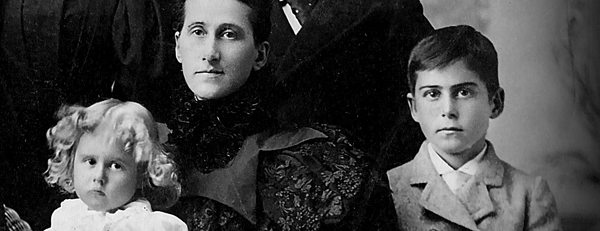
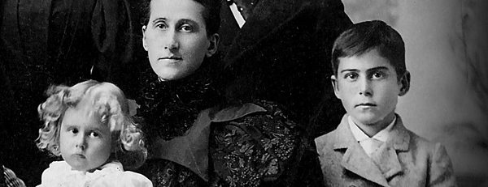
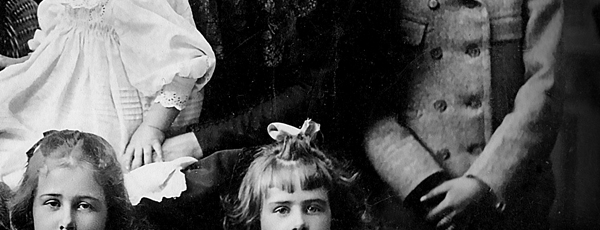
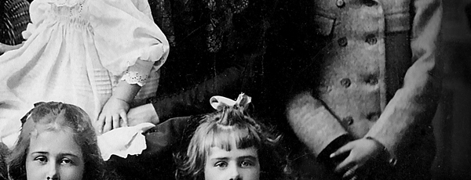

Reich Family
Reich Family Genealogical Research Project


 

 



The Reich Family Genealogical Research Project is a sacred endeavor rooted in our commitment to remembrance, truth, and familial unity. It serves as a living archive for the records, stories, and legacies of those who came before us, preserving their memory within the spiritual and historical framework of our Family. This project reflects our belief that honoring the past is essential to understanding our place in the present and guiding our path into the future.
Our research is conducted with diligence and reverence, drawing upon trusted genealogical platforms such as FamilySearch.org and JewishGEN. These resources allow us to trace our lineage across generations, uncovering connections that affirm our shared identity and deepen our understanding of the lives that shaped our Family. Each discovery is approached not merely as data, but as a sacred thread in the tapestry of our collective story.
The articles and memorials we produce are grounded in historical documents that bear witness to the lives of our ancestors. These include census records, marriage and death certificates, military service files, naturalization papers, and ship manifests. Through these materials, we reconstruct the journeys, struggles, and triumphs of those who came before us, ensuring that their voices are not lost to time. Every memorial is crafted with care, reflecting our devotion to truth and our love for those whose lives we honor.
All writings within the project are private, intended for members of the Reich Family and fellow researchers who share our commitment to historical integrity. However, in rare cases where an individual’s story holds broader significance to the public historical record, we make select memorials available beyond our circle. Examples include the articles honoring Polly Hannah Klaas and her grandfather Dr. Eugene Reed, as well as Maria Katsaris and her father Steven Katsaris. These memorials serve not only as tributes but as contributions to the greater understanding of history and humanity.
The Genealogical Research Project is more than a collection of documents—it is a reflection of our sacred duty to remember, to preserve, and to pass on the truth. It is an expression of our love for one another and our reverence for the lives that have shaped our Family. Through this work, we remain connected to our past, grounded in our present, and prepared for the future that awaits us.